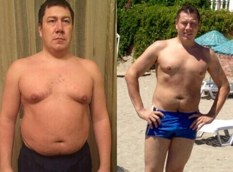
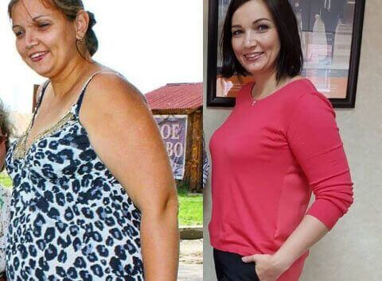
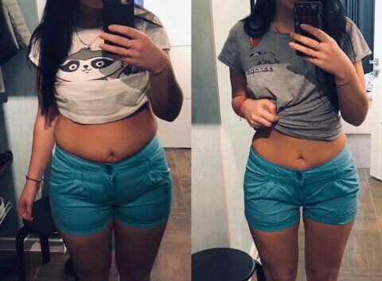

Tonny Garnier
13 commentaires
On reçoit de nombreuses lettres de nos lecteurs. "Je suis incapable de maigrir". À l'approche de la saison des plages, ce sujet est plus d'actualité que jamais. On ne peut pas donc se passer des conseils d'un nutritionniste !

"Il y a un an, j'ai complètement renoncé au sucre et la restauration rapide. Je vais au gymnase 3 fois par semaine, je fais mes abdos tous les jours et je cours le matin. Mais plus j'essaye, moins j'y arrive. En un an, je n'ai perdu que 6 kg, alors je comptais en perdre 10 ou 12. Que dois-je faire?"
Maria, 32 ans
"J'essaye de maigrir depuis toujours. Je mange peu, je fais un travail physique, après le travail je joue au volley-ball et je nage. Mais je suis toujours grosse! Avec un style de vie super actif, je pèse 82 kg, impossible de maigrir. Il suffit de se lâcher un peu, de manger une barre de chocolat ou de sauter un entraînement, et je gagne immédiatement 3-4 kg. Aidez-moi!"
Mélanie, 41"Celles et ceux qui essayent de maigrir depuis toujours viennent me voir les larmes aux yeux. Pour avoir une taille fine et des hanches minces, les gens sont prêts à ne manger que de la salade et des pommes, à transpirer à la gym, à renoncer à leurs desserts préférés ... Cependant, ils ne perdent toujours pas de poids! Nous avons tout essayé, mais le résultat n'est pas au rendez-vous, ou le poids revient rapidement après le moindre écart".
Tonny Garniernutritionniste, spécialiste de la nutrition saine
La raison? C'est de la faute du métabolisme qui marche au ralenti. Chez les personnes sujettes à la prise de poids, le métabolisme est lent au départ. Et les régimes le ralentissent davantage. Par conséquent, si vous pesez au-dessus de la normale, des restrictions alimentaires ne feront que nuire.
Les régimes hypocaloriques sont trop stressants pour l'organisme. Notre corps resent le coup de faim et pour se protéger active le mode d'économie d'énergie en accumulant la grasse à un rythme accru, même si vous combinez le régime avec des entraînements réguliers.
Et vice versa, plus votre organisme est détendu, plus il est disposé à se séparer des kilos en trop. Mais il est difficile d'atteindre cet état de façon naturelle. Pour accélérer le métabolisme, il faut employer des moyens spéciaux.
Le meilleur exemple est le mode de vie des moines bouddhistes dans les anciens monastères du Laos. Ils passent presque toute la journée assis, en prière, vivent de l'aumône des croyants, et presque tous les soirs avant de se coucher, ils organisent des repas luxueux.
Un Européen avec son métabolisme lent aurait pesé facilement 100 kg en menant un style de vie pareil. Mais les moines lao restent sveltes et en bonne santé jusqu'à la vieillesse!
Mes collègues se sont penchés sur ce phénomène dans les années 80. Il s'est avéré qu'entre les prières et les méditations, les moines ont un rituel obligatoire: une tasse de matcha. C'est une boisson agréable à base de feuilles de thé japonais, écrasée en poudre fine. Selon les moines, cela aide à rester en forme, à ne pas tomber malade et à ne pas grossir.
Le thé Matcha est une source riche en thiamine, théophylline, riboflavine, rétinol et d'autres substances qui accélèrent le métabolisme de manière naturelle. Celles et ceux qui mettaient du poids en mangeant ne serait-ce qu'un petit pain, perdent rapidement leurs kilos grâce à ce thé et ne reprennent plus de poids. Les catéchines contenues dans le matcha décomposent les cellules adipeuses (lipides) qu'on accumule à partir des aliments et les empêchent de se redéposer sur les hanches et la taille. Les molécules de graisse de grande taille sont broyées par les catéchines en triglycérides, plus petits, qui sont excrétés du corps avec l'urine, les matières fécales et la sueur.
Il a été cliniquement prouvé que le thé matcha, entre autres, rétablit
le travail du cœur, des vaisseaux sanguins et du système endocrinien, stimule la régénération
tissulaire et prévient le vieillissement et le relâchement (ptose) de la peau.
Dans notre pays, matcha est commercialisé sous la marque de . Il est enrichi en bétail, un glucide qui accélère le travail des intestins et un extrait d'acide citrique, qui élimine les toxines, les sels et autres substances nocives du corps. Cette boisson aide à perdre du poids plus rapidement qu'un matcha traditionnel. Selon mes observations, déjà en 3-4 semaines de consommation quotidienne de les gens perdent jusqu'à 12-15 kg , même celles et ceux qui n'arrivaient pas à perdre du poids à l'aide de régimes et de sport.
Voici à quoi ressemblent mes clients qui ont inclus dans son alimentation. Je publie la photo avec leur permission:
 Max, 39 ans.
Avant - 104 kg, après - 89 kg
 Mylène, 27
ans.
Mylène, 27
ans.
Avant - 92 kg, après - 74 kg
 Diana, 32 ans.
Avant - 81 kg, après - 68 kg
 Cynthia, 24
ans.
Avant - 77 kg, après - 62 kg
Ils ne sont pas au régime et ne font pratiquement pas de sport, une gym légère le matin tout au plus. Mais grâce à , leur métabolisme s'est rééquilibré en seulement un mois. Et maintenant, le surpoids ne les menace pas.
est disponible ici . C'est le fournisseur officiel de thé matcha l'origine Asie. Ils se peut que d'autres vendeurs, parfois sous le couvert de , vendent du thé granulaire ordinaire teinté. Par conséquent, il est préférable et plus sûr de le commander sur le site officiel.

Marie-Line

C'est pratique à prendre. Ça se boit comme du thé normal, on ne se prive de rien et le résultat ne se fait pas attendre

Victor
Natalie , c'est normal. Nombreux sont ceux qui n'arrivent pas à perdre autant en quelques années
Claire
Quelqu'un saurait si peut être pris pendant plus d'un mois? Dans la notice, ils disent que la cure dure 30 jours, alors que je dois perdre plus de 25 kg
Hélène

J'ai commencé à en prendre, j'ai mangé tout ce que je voulais et j'ai perdu 9 kg. Je crois que le nutritionniste a tout dit correctement: il n'y a pas besoin de se tuer à la gym, j'ai ni temps ni envie pour ça. C'est la solution pour des gens comme moi c'est parfait! Je recommande! Voici mes résultats
Michel

Avant je pesais 90 kg. Quand j'étais jeune, j'étais toujours mince, et avec l'âge, j'ai pris du ventre et des poignées d'amour. J'ai fait beaucoup de sport mais je n'ai pas pu retrouver la forme d'autrefois. Suivant les conseils d’un ami, j’ai essayé ce produit et voici le résultat quelques mois plus tard!

Géraldine
J'étais au Laos et j'ai vu ce thé vert. Si je savais que ça faisait maigrir, j'aurais ramené un sac entier avec moi!

Lily
Minette Avez-vous essayé de maîtriser votre alimentation? D'abord ils se lâchent et ensuite ils désespèrent pour reprendra la forme.
Robert
Lily , laissez-moi vous donner mon avis médical, il y a des gens qui ont tendance à prendre du surpoids génétiquement parlant, les régimes ne sont pas efficaces pas, il faut se faire aider. Si vous n'êtes pas prédisposée à l'embonpoint, vous avez de la chance, mais je vous assure que tout le monde n'est pas la même chance que vous.